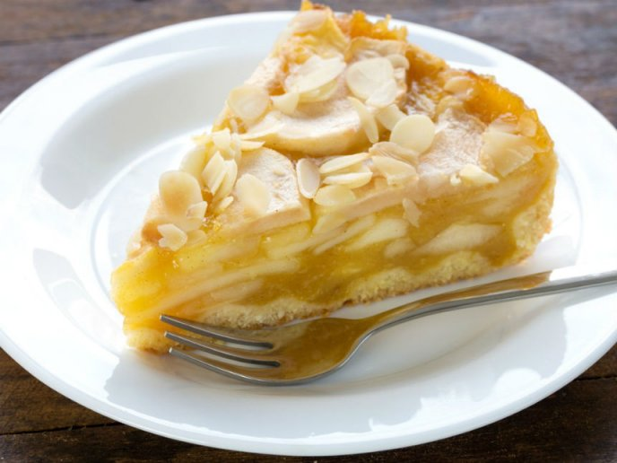
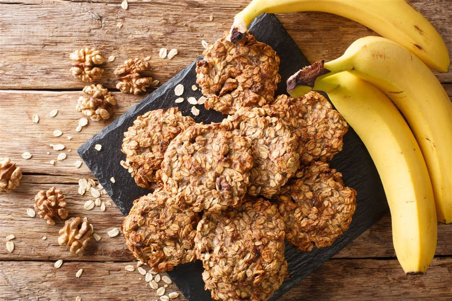

Postres

Tarta de Manzana y Avena
Deléitate con la dulzura natural de las manzanas en una tarta ligera de avena, equilibrada y deliciosamente horneada para un postre saludable y delicioso.

Parfait de Yogur, Granola y Frutas
Capas de yogur griego, granola crujiente y frutas frescas para un postre refrescante y lleno de texturas.

Galletas de Plátano y Avena
Mezcla plátanos maduros con avena y hornea para obtener galletas suaves y saludables, ideales como postre o tentempié nutritivo.